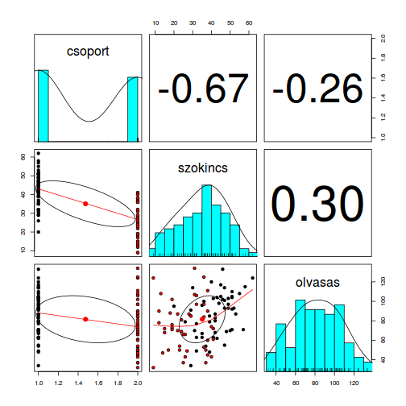

# példaadat betöltése
data(dyslex)
dat <- subset(dyslex,
oszt <= 4,
select = c(csoport, szokincs, olvasas)
)
data.frame, a summary() függvény meghívásával
számos alapvető leíró statisztikát kapunk vissza (melyek mindegyike a válasz
osztályához igazodik, pl. gyakorisági tábla faktorok esetében, de
min/max/átlag/medián stb. numerikus változóknál)summary(dat)
## csoport szokincs olvasas
## kontroll:51 Min. : 9.00 Min. : 32.00
## sni :46 1st Qu.:26.00 1st Qu.: 66.00
## Median :36.00 Median : 83.00
## Mean :35.09 Mean : 81.63
## 3rd Qu.:44.00 3rd Qu.:101.00
## Max. :62.00 Max. :134.00
describe() és
describeBy() függvénye# psych betöltése
library(psych)
# numerikus változók
numeric_vars <- c("szokincs", "olvasas")
# leíró statisztikák a kontroll- és sni-csoportban
describeBy(dat[, numeric_vars],
dat$csoport)
## group: kontroll
## vars n mean sd median trimmed mad min max range skew
## szokincs 1 51 42.80 8.87 43 43.02 8.90 20 62 42 -0.28
## olvasas 2 51 87.53 22.01 92 88.17 22.24 34 133 99 -0.24
## kurtosis se
## szokincs -0.38 1.24
## olvasas -0.66 3.08
## --------------------------------------------------------
## group: sni
## vars n mean sd median trimmed mad min max range skew
## szokincs 1 46 26.54 9.57 26.0 26.76 12.60 9 41 32 -0.12
## olvasas 2 46 75.09 25.10 72.5 73.97 26.69 32 134 102 0.34
## kurtosis se
## szokincs -1.23 1.41
## olvasas -0.63 3.70
# ábrázolás (színezzük is a csoportokat)
pairs.panels(dat, bg = dat$csoport, pch = 21)
